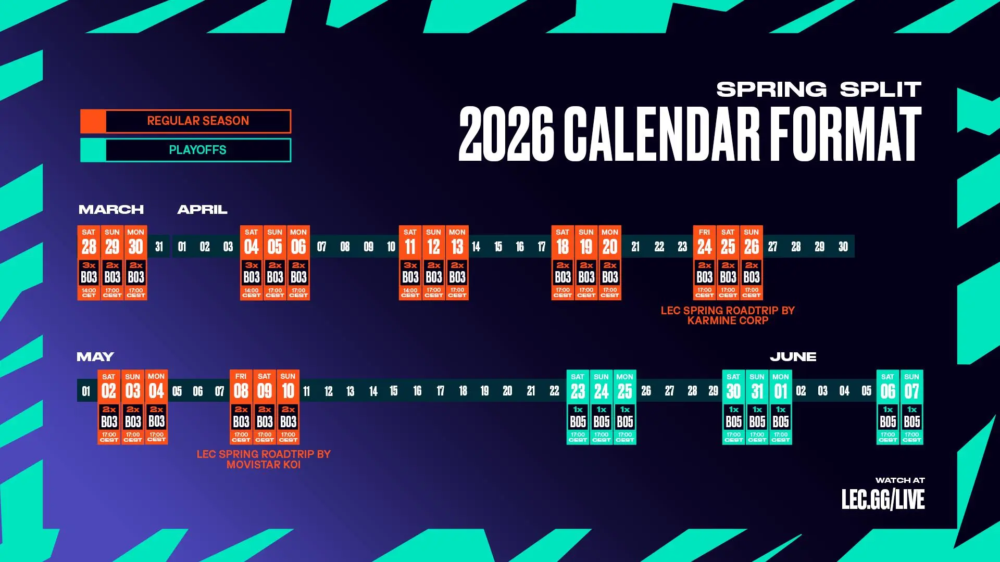

La semana pasada G2 Esports completó uno de los comebacks más memorables de la historia del LEC: de 0-2 abajo con 9.000 de oro de desventaja a 3-2 ante Movistar KOI, con Caps firmando la actuación individual de la postemporada. Es el tipo de remontada que define narrativas y que llega al momento perfecto — a una semana de la final que decidirá el representante europeo número uno en el MSI.
El formato de esta final tiene una particularidad crucial: ambos finalistas se clasifican para el MSI 2026 en Daejeon, Corea del Sur. El ganador va directo a fase de grupos, el subcampeón al play-in. Para G2, que ya tiene la plaza garantizada por el clasificatorio del EWC, ganar la final significa llegar al MSI como campeón europeo — el estatus más alto posible. Para su rival, es la oportunidad de colarse en el torneo internacional más importante del año.
Caps llega a esta final con estadísticas de temporada regular y playoffs que no tienen precedente en su carrera. Rasmus Winther está jugando el mejor League of Legends de su vida a los 25 años, y eso en un jugador que ya tiene 16 torneos internacionales en el cuerpo es una afirmación que da vértigo. Hans Sama en bot lane y la solidez de todo el equipo completan un G2 que sobre el papel no tiene puntos débiles evidentes.
La gran final del LEC Spring 2026 se jugará el 7 de junio con toda la atención del League of Legends europeo puesta en ella. Será el cierre de un split que empezó con Vitality dominando la fase regular y terminó con G2 recordando por qué llevan una década siendo el equipo más grande de Europa. Lo que está en juego no es solo un trofeo — es quién representa a Europa con más autoridad en Corea.